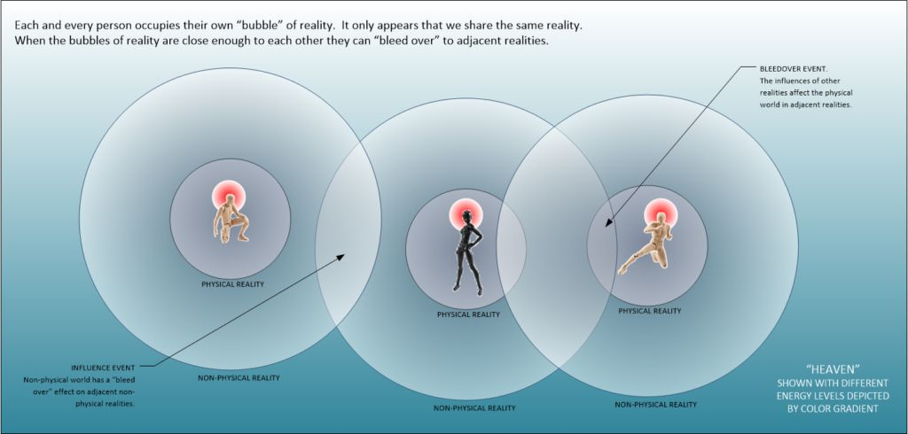
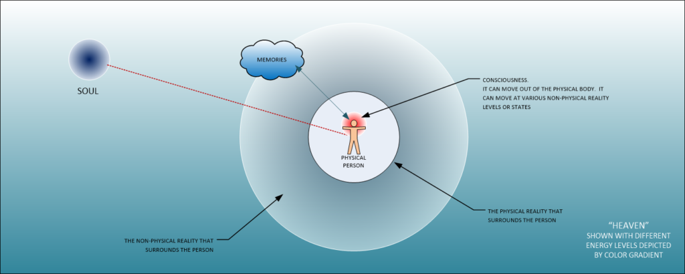
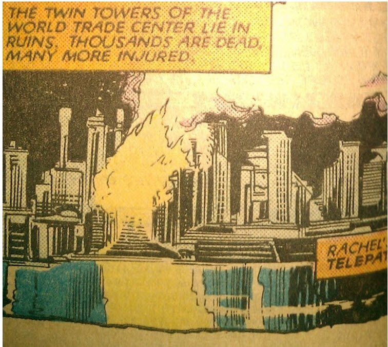
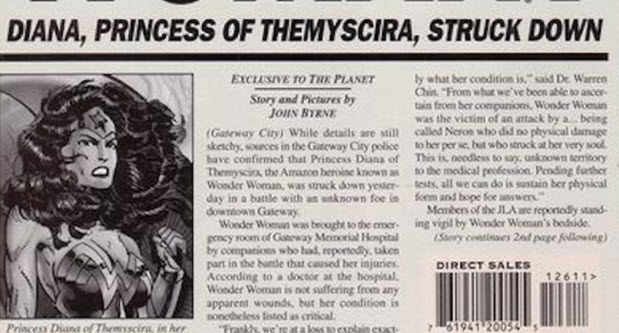
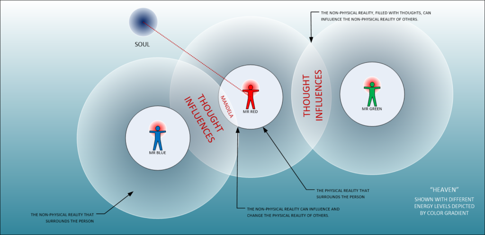

Here we talk a little about the “Mandela Effect”.
This is a name given to describe a situation where memories don’t match the reality that we inhabit.
Now, I could follow every other person on the Internet and write a blurb or two about how it is visualized, but I won’t. Instead, I will describe why it occurs and how it manifests. Here is the real deal, folks. You want to know what MAJestic knows, well listen up.
Basics
Firstly, memories do not reside within the physical brain. They reside in non-physical space.
Secondly, we all do NOT share a common reality. We share a common reality TEMPLATE. We occupy individual realities based upon that template.
Thirdly, since everyone has an individual reality, they can sometimes “bump” or influence other realities.
Fourthly, this influence manifests in many different ways. We will talk about [1] the Mandela Effect, where world-lines do not match apparent memories, and [2] Bleed Over Effects where adjacent non-physical realities can influence actions within your reality.
The Big Picture
In a universe with very advanced civilizations along with primitive ones (like ours), there begets a need to maintain order. Advanced civilizations know how fragile our universe actually is. As such they have created systems to assure stability within it.
They have created sentience archetypes and biological archetypes that are approved. These systems are designed to prevent discordant and chaotic events. Our universe constantly slides in and our of the various veils of the MWI, and by being able to control the sentience evolution, they are able to regulate how thoughts manifest.
Thoughts alter and modify our reality.
Our Nursery
Our species lives within a nursery of sorts. It is policed and controlled environment that permits our evolutionary growth and limits our contradictory behaviors and thoughts to influence the areas outside of the nursery. We are not a stable species. Which actually means that we have not yet evolved into a stable sentience and a stable archetype. We are transitory. Our biology and garbon configuration is evolving.
Therefore, the management of our sentience nursery must monitor it and help police it to achieve the preferred evolutionary directives.
The reader might question the need for policing our sentience growth. After all, they might wonder, certainly (there must be) other species who have grown and developed a sentience without outside interference. Why develop one purposefully? Well, the answer is simple. If the reader recalls, the emergence of sentience in our galaxy was not smooth, and resulted in various conflicts.
Call the conflicts what you may, but the end results of this was the establishment of sentience archetypes. The cultivation of those archetypes is considered very important, and for us humans, it is the reason why we occupy the earth nursery…
A Formalized System
The reader should understand that, in this galaxy, there is a formalized system of managing sentience development. In other words, there is a “federation” that polices the development of emerging species. They help seed, cultivate, and “harvest” sentience’s. This is a very good thing, and the human species is one such sentience that is being “cultivated”.
In subsequent articles we discuss this system. In our local geographic physical area there are five solar systems involved as a sentience nursery. Earth is not the only one.
In a universe where there are many different world-lines, and one where sentience archetypes must be developed, there begets a need to limit physical exposure. For too much exposure to the MWI can retard or alter sentience development. Thus, unlike many established sentience’s, transitional sentience’s (such as humans) need to have their ability to traverse the multi-worlds limited.
Purposeful Limitations
Humans cannot traverse the MWI as easily as other species can. This is intentional.
All world-lines in the MWI are all connected. They stand alone, but they are all connected through individual and group thoughts. Therefore, if a person has a particularly strong event, or a series of events that influences others, then they can manifest into the realities of a given time line. There is no such thing as coincidence. There is not. Everything fits together, even the most seemingly unconnected events that transcend time and space.
Everything fits together and influences each other.
Because it does, we can observe the influences as they pop in and out of our reality…
The Mandela Effect
"The Mandela effect" is what the internet is calling those curious instances in which many of us are certain we remember something a particular way, but it turns out we’re incorrect. The name of the theory comes from many people feeling certain they could remember Nelson Mandela dying while he was still in prison back in the ’80s. Contrary to what many thought, Mandela’s actual death was on Dec. 5, 2013, despite some people claiming to remember seeing clips of his funeral on TV. -Buzzfeed
We see and understand strange things that seemingly has no place in our fine and well-understood universe. But, maybe, just maybe… the universe is not what we think it is at all. Maybe it only looks that way.
Basic Introduction
To begin this discussion, let me direct the reader to the following You-Tube videos;
- Are Barron Trump and Donald Trump Time Travelers? – Whang!
- Is This Proof Donald Trump Is a Time Traveler? Must See Too!
- Mandela Effect: Time Travel & Trump
The Reader should not get too hot and bothered about these videos. They are just attempts by people who are trying to understand the strange and unusual. Is everything a coincidence? What are these events? A book written about a Barron Trump? A Mr. Trump talking about “Pizzagate” before it occurred? Who is Professor John Trump and what is his tie with Donald Trump?
To understand these questions, the reader must remember that our brains try to provide answers to perplexing mysteries by using our own personal experiences.
We think in terms of just HOW can this happen when we all know that scientists have “proved” how the universe works. We try to figure out things that just do not fit within that really nice and simple explanation of how the world works.
But, boys and girls, it can never fit into our nice and tidy belief that we all share the same reality. It simply cannot.
Wake up!
We do not share anything. It only appears that way. We all live in our very own realities and our realities change as our thoughts change. It is a universe of change, with the mere appearance of stability.
Consider an Unexplainable Coincidence
“It was the biggest, grandest vessel to ever sail the ocean. A luxury liner dubbed “unsinkable” when it set sail early one April across the North Atlantic — until it struck an iceberg off Newfoundland and sank to the ocean floor."
But this was not the Titanic; it was the Titan, a fictional ship that sank in the pages of Morgan Robertson’s 1898 novella Futility (later re-titled The Wreck of the Titan) — a book published more than a decade before the Titanic’s ill-fated 1912 voyage and almost a century before Kate and Leo embarked on theirs.”
Thoughts can create realities.
Yes. Nothing is coincidence. The realities that you and I experience are caused by thoughts. Not only of our thoughts, but the thoughts of other consciousnesses within nearby or adjacent realities.
Therefore, nothing is a coincidence.
Everything that can and will happen is already happening in the ever present “now”. We experience the events, or record the events as our own thoughts generate them. Thus, what is imagination but an intuitive connection to our other selves (our quantum shadows) in other world-line realities?

In today’s world, we are still stuck in the Newtonian reality. No one really wants to embrace the quantum reality. “If I cannot physically prove it, it must not exist!” But, guys that belief is crazy. Here is the way things are…
We live in a construct.
It is a physical reality that is governed by thoughts.
This is actually evidence of multiple world-lines via GIPHY
Welcome to my world. It is a world of the quantum reality where everything that looks hard and solid, is really just thought constructs. By understanding this, we can well understand that different consciousnesses have different thoughts.
Yes?

And if there are many thoughts floating about in the non-physical reality, that they can influence each other. They can add, subtract from, multiply and even divide other thoughts . All these actions would have physical manifestations.
Group thoughts manifest in strange ways.
To truly understand why we have such things as coincidences, and Mandela Effect, and Bleed-over events, you need to understand that our reality is our very own reality. We do not SHARE our realities. It only looks that way. Those people who are around us are mere quantum shadows of another reality.
We can start with the book “The Narrative of Arthur Gordon Pym of Nantucket” It is a novel that predicted the death of a real life person with the same name as its fictional character. Coincidence?
The Narrative of Arthur Gordon Pym of Nantucket
In 1838, Edgar Allan Poe wrote his only complete novel “The Narrative Of Arthur Gordon Pym Of Nantucket”. One of the characters, a mutineer named Richard Parker, became prey to monstrous cannibalism.
After all the mutineers are thrown overboard, Parker is the only one spared to help with the operation of the ship. The ship then capsizes and leaves the remaining crew members without adequate food. Parker suggests he and his three surviving crew-mates draw straws to sacrifice one among them, in order to save the rest. Following this suggestion, he draws the short straw and is eaten alive by his mates.
It’s a pretty good story. It was written in 1838.
Some 46 years later, in 1884, the 52-foot yacht Mignonette set off from Southampton, England for Australia. It sank. Four survivors including a 17-year-old cabin boy named Richard Parker escaped in a lifeboat. When their resources and food ran out, they were forced to drink their own urine and finally three of the men killed Parker and devoured him, much like his fictional counterpart.
The movie the Life of Pi via GIPHY
In 2001, author Yann Martel paid homage to both real and fictional Richard Parkers in the novel Life Of Pi. In Pi, Martel named a Bengal tiger – and survivor of a shipwreck – Richard Parker.
The point being that can this actually be coincidence?
I argue that there is a mechanism, a hidden mechanism, that causes things like this to manifest. I argue that these kinds of things manifest through the interaction of our non-physical realities when they interact with each other in the MWI.
Futility, or the Wreck of the Titan
In 1898, Morgan Robertson wrote Futility, Or The Wreck of the Titan. The book describes the journey of a fictitious ship called Titan which eventually collides with an iceberg and sinks. The fate of Titan closely mirrors the sinking of the RMS Titanic in 1912. The similarities between the RMS Titanic and Titan are numerous and include such things as…
• Both were triple screw (propellers)
• RMS Titanic measured “882 feet, displacing 53,000 long tons” and was deemed “nearly unsinkable.” The Titan was “800 feet, displacing 75,000 tons” and was also described as “unsinkable.”
• The Titanic carried only 16 lifeboats and 4 Engelhardt folding lifeboats while the Titan carried “as few as the law allowed” – i.e., 24 lifeboats.
• Moving too fast at 22½ knots, the Titanic struck an iceberg on the starboard side on the night of April 14,1912, in the North Atlantic, 400 nautical miles (740 km; 460 mi) away from Newfoundland. Moving at 25 knots, The Titan also struck an iceberg on the starboard side on an April night in the North Atlantic, 400 nautical miles (740 km; 460 mi) from Newfoundland.
• The Titanic sank and more than half of her 2200 passengers and crew died. The Titan also sank, and more than half of her 2500 passengers drowned.
Why, everyone knows that this can only just be a coincidence. But people, please listen up. There is NO SUCH THING as coincidence. We are all connected on the quantum level. If there is one thing that everyone should recognize is the importance of this interconnected relationship.
This is just my may of explaining how entanglement manifests within a person’s individual reality.
Harry Potter
Eight years before the first Harry Potter books were published, Jane Yolen published a book called Wizard’s Hall about young boy named Henry who gets recruited to a wizard’s school with teacher’s pictures that move about and a wicked wizard who used to teach there. Coincidence? The author certainly thinks so.
The 9-11 Attacks
Tom Clancy predicted the 9-11 attacks. In the U.S. government’s official accounting of what happened on Sept. 11, 2001 — The 9/11 Commission Report — the assembled collection of experts and officials took U.S. national security officials to task for what they described as an incredible lack of imagination. How, they asked, could no one have predicted that terrorists might ram airplanes into major buildings and cause untold destruction, especially when none other than Clancy predicted exactly such a scenario?
In Clancy’s 1994 novel Debt of Honor, Japan, led by a faction of hard-line nationalists and having acquired nuclear weapons, goes to war with the United States, aiming to re-establish the Greater East Asia Co-Prosperity Sphere. Following Japan’s defeat at the hands of the United States — thanks, of course, in large part to the wiles of Clancy uber-hero Jack Ryan — the pilot of a Japan Air Lines 747 decides to fly his plane into the Capitol dome during a joint session of Congress, killing just about the entire American government.
With this in mind, the 9/11 Report mournfully notes that “neither the intelligence community nor aviation security experts analyzed systemic defenses within an aircraft or against terrorist-controlled aircraft, suicidal or otherwise.” As the report reveals, national security officials were reading Clancy and aware of his predictions but never took them particularly seriously:
"[The Clinton administration counter-terror official] Richard Clarke told us that he was concerned about the danger posed by aircraft in the context of protecting the Atlanta Olympics of 1996, the White House complex, and the 2001 G-8 summit in Genoa. But he attributed his awareness more to Tom Clancy novels than to warnings from the intelligence community."
It wasn’t only Tom Clancy, but also Michael Caine as well.
Sir Michael Caine has said he ‘predicted’ a terrorist plot to fly planes into a skyscraper before the 9/11 attacks happened. The actor revealed that he was writing a novel about a terrorist attack when he dreamt up the scenario, prior to the events that took place in New York in 2001. Speaking to BBC Radio 4’s Front Row, Sir Michael said that he chose not to continue with his book after 9/11, which claimed the lives of nearly 3,000 people, took place.
“I had this plot where terrorists fly a plane into a London skyscraper. Then they did it in real life. I was stunned by that, so I stopped writing.”
It is not only the famous that predicted this event, but also comic book artists and authors.

Multiple comic books have featured the Twin Towers of the World Trade Center damaged by evil villains, but none managed to get as close to reality as an issue of Uncanny X-Men from 1985. The Marvel series had recently introduced the character of Rachel Summers, a telepathic mutant sent back from the future. In this story, she’s battling the Hellfire Club in Manhattan while trying to deal with the differences between the Manhattan of her time and the present day. One of the biggest differences? The WTC is still there – in Rachel’s future, the towers had been completely destroyed. By a mutant terrorist attack.
Donald Trump
The Simpsons (an American cartoon) accurately predicted that Donald Trump would become president of the United States.
Th Simpsons have accurately and uncannily predicted events through the lens of the humorous. It makes you wonder if God has a sense of humor, eh?
Please understand that there IS NO SUCH THING as coincidences. They only appear that way. This is because we are unable to see things are they really and actually are. We only perceive in three dimensions when we actually exist within an eleven dimensional reality.
You have to keep that in mind.
Everything is quanta in nature and behavior. As such, even the smallest thoughts can manifest as a reality. We, as consciousness can migrate in and out of the MWI. Our reality becomes what we think about, because what we think about is a creative process.
What we think about always becomes our reality.
The building “The Shard” in London
The television show “The Simpsons” predicted more than just Donald Trump becoming President. The predicted a building in London known as “The Shard”. The “Lisa’s Wedding” episode from 1995 (season 6, episode 19) came with a lot of unexpected predictions. During Lisa’s trip to London, we see a skyscraper behind Tower Bridge that looks eerily similar to The Shard and that is even in the right location. Construction on the building started in 2009, 14 years later.
The Challenger Disaster
In this example a comic book predicted the Challenger Disaster. This one’s a little strange because the prediction in question wasn’t published in its original form, but it’s still weird as hell.
In 1986, DC Comics hired superstar writer-artist John Byrne to revitalize Superman for the modern age in a miniseries called Man of Steel. The book’s mandate was to bring Supers’ power levels down to something reasonable and update his origin for the ’80s. You know, there is a need to make things more reasonable and explainable. Turn it into something that you can understand and relate to.
In the first issue, one of the hero’s biggest tests is rescuing a space shuttle that suffered an engine explosion right after launch. As he was finishing the pages, the space shuttle Challenger launched – and suffered an engine explosion, killing everybody aboard in NASA’s greatest tragedy ever.
Byrne quickly re-drew the pages, changing the shuttle to an experimental plane. That’s a pretty chilling way to learn you have precognitive powers.
The Death of Princess Di
This one’s another timing-related prediction, but by God it’s a weird one.
Most people know who Wonder Woman is, but fewer know her secret identity: Princess Diana of Themyscira. There was another famous princess named Diana, right? Remember her?
In 1997, an issue of Wonder Woman came out with a fake newspaper cover emblazoned with the headline “DIANA, PRINCESS OF THEMYSCIRA, STRUCK DOWN.” Inside, the titular Princess Di dies. Three days after the comic came out, the real-world Princess Di was involved in a car accident in Paris that claimed her life. Pretty creepy coincidence there.

President Kennedy’s Assassination
President Kennedy’s Assassination via GIPHY
On the morning of 22 November 1963, Jackie Kennedy was unnerved by a full-page ad placed in the Dallas Morning News — not so much because it accused the president of being a Communist sympathizer but rather because it had a black border and resembled a death notice.
JFK tried to comfort her with the words: “We’re heading into nut country today. But, Jackie, if somebody wants to shoot me from a window with a rifle, nobody can stop it, so why worry about it?”
That Kennedy made such a comment about his own assassination on the day he was shot is coincidence enough, but that he so casually predicted the precise method of his death is nothing short of sinister.
Coincidence
Nothing is coincidence.
Since everything, not just in the physical, but in the spiritual as well are connected, then it makes complete sense that the orderly management of soul formation, configuration and (apparent) life be managed. That is exactly what is going on.

To understand what is actually going on, we must recognize that what we think is reality is just not true. Each of us, our consciousness, occupies a physical body that is within a physical reality. None of us share the same reality… It only appears that way.
We share a universal template. Our thoughts and our soul carves out a reality within this template for us to obtain experiences from.
Our thoughts can create things to manifest. Such as the numerous examples already listed.
Our thoughts can create things to manifest via GIPHY
They can also alter our MWI world-line.
Since we are soul, with a physical body, then thoughts can influence our other soul manifested bodies. This can be evidenced by ideas, or thoughts that might appear as ESP, or clairvoyance. To those who believe in technology instead of ESP ability, this might appear as time or dimensional travel.
There is an event known as “bleed over” where thoughts from one world-line (time and space), influence or “bleed over” into other world-lines.
Let’s look at some “bleed over” events and how they manifested in our “reality”.
Bleed Over Events
In short, a “bleed over event” is when there are [1] numerous world-lines of a similar nature, and [2] clustering of thoughts manifest. We discussed this clustering of thoughts elsewhere, and it is a serious concern. Clustering of thoughts create situations whereas the thoughts “interfere” or “interrupt” the thought streams of a given quantum shadow in an aligned world-line. The result of this is mass world-line collective behaviors.
These events where our brain tries to sort things out, such as “how did Donald Trump know of Pizzagate” is perplexing. That is because the only ONLY thing that we can associate it with is “time travel”. Since most people have no understanding of world-line travel and MWI, the concept of “bleed over events” is alien to them.
Here, this event involves many people in many world-lines. In these world-lines are other President Donald Trump dealing with this event. The large number of these events, coupled with the strong thoughts associated with it, creates a cascading effect that causes “bleed over” to nearby (world-lines of small deviance) world-lines. Of course, Donald Trump “remembers” the events, his thoughts are shared with the thoughts of other Donald Trump’s (quantum shadows) on other world-lines. The shear magnitude of the thought impact directly impinges upon his reality.
As a result it crashes into our reality as well.
Mandela Examples
We observe these “bleed-over” events and interpret them in different ways. Realists say, “oh it’s a simple misunderstanding”, or that “it’s a coincidence”. No one seemingly wants to accept the fact that thoughts can alter our realities. They can do this both forward and backward in time.
We want to explain things away so that they fit nicely into our own reality.
There are a lot of different theories for why the Mandela Effect exists. Many believe that it is a result of time travel. Possibly some person who will live thousands of years from now traveled back to our time and changed little things in the middle of our lifetime. Others think it may be due to the shifting of parallel universes. Perhaps we all once lived in a universe where things were slightly different and we still remember it that original way but are now in a reality where things are different. Some people have even gone as far to say that the ending of the world in 2012 didn't seem to happen because it was simply the end of our current universe and we all shifted into a new one. Psychologists credit the Mandela Effect to confabulation, the clinical term for memory defects. However, the fact that large numbers of people who have never met all have identical false memories continues to stump even the most educated psychologists. -Odyssey
Well, maybe it’s because of misunderstandings. Or, maybe it’s because of time travel. Still others want to attribute it to a dark sinister organization of evil globalists.
The truth is that we see these things manifest simply because that is the nature of our universe.
Our universe is not what we think it is. It only looks that way.
These Mandela effects, and these bleed-over events are nothing more than the physical manifestation of thoughts, in many cases actual groupings and collections of thoughts.
We kind of slip or slide in and out of world-lines. Yet, folks, please understand what we think of as a world-line is actually something different. Instead of nice clean and defined reality, like a box of packaged everything, it is actually more like an amorphous jelly that we end up sliding into.
“Oscar Meyer” isn’t spelled that way.
The Berenstein Bears
This is one of the most common examples of the Mandela effect. The Berenstein Bears is a popular children’s book and television show series that has been popular in the United States for many, many years.
Many people remember the series as the Berenstein Bears. Yet, it’s actually called the “Berenstain Bears”.
Now, if you go back and look at your old VHS tapes or books, it will say “Berenstain.” There is no record of it ever being called “Berenstein”. This Mandela Effect example is one of the most popular because so many people vividly remember it being “Berenstein.”
The show called Sex in the City.
The show is actually called Sex and the City, but many people insist they remember it being “in the” at some point. Why do so many people remember this? Indeed, people have even posted pictures of old memorabilia they have that supports their false memory.
The Flintstones
Here is a very good example of the sliding and changing of a world-line as the MWI is moved and motivated by thoughts.
This one has tended to shift in and out of reality, which has freaked me out throughout my research. Just under one week ago, the "Flintstones" was spelled without a "T" as the "Flinstones." Today I went to google it, and saw that it changed from "Flinstones" to "Flintstones" and was back to its original spelling. I might sound crazy saying that, but I'm not the only wannabe Mandela Effect expert that has kept up with it and noticed the constant shift. I am glad that the "t" is back because in my childhood I vividly remember it being spelled "Flintstones." Most remember their last name being “Flintstones,” which makes sense because flint is a type of rock and the family lives in the fictional town Bedrock, where everything is made of rock. However, if you went back and watched it last week, their last name was actually “Flinstone.” Today, it is once again "Flintstone." This example firmly backs up the theory of shifting parallel universes because it changes constantly. If you google "Flintstones Mandela Effect," you will see that many other people have also noticed it switching.
“We Are the Champions” by Queen ends differently than many recall.
Many of those familiar with the song remember the final lyrics being “No time for losers, ’cause we are the champions…of the world!” Guess what? There is no “of the world!” The song just ends, and it’s driving people crazy because they feel 100% sure that they’ve heard otherwise in the past.
“Mirror Mirror On the Wall“
This quote from the Disney cartoon Snow White is probably one of the most famous of all time.
Ah, it isn’t “mirror mirror on the wall.”
In the movie, they say “magic mirror on the wall.” I even remember watching the movie after the song “mirror mirror” was released, and the movie clearly said “mirror mirror.” Why would there be so much merchandise that says “mirror mirror” and a spin off movie with that name if it never was “Mirror Mirror on the Wall”?
“Life is like a box of chocolates.”
In the movie Forrest Gump, Forrest says, “My momma always said, life is like a box of chocolates.”
That is a famous line that everyone who has ever seen the movie would know.
Now go back and re-watch the movie, it doesn’t say that. Instead, it says “life was like a box of chocolates.” That doesn’t even sound right with the quote or in the context of the movie. I’ve never met somebody who remembers it saying “was.” If you go on google and type in the beginning of the quote and stop at “life,” the next suggested word is “is,” not “was.”
“It’s a beautiful day in the neighborhood.”
In the children’s show, “Mister Rogers’ Neighborhood,” he always sings a song with the line “It’s a beautiful day in the neighborhood.”
Everyone who watched this show as a child remembers it this way. Including myself, who would sing the song this way then I taught English to Chinese students.
Well, now the song says “It’s a beautiful day in this neighborhood”. That doesn’t even sound right in the song and nobody remembers it this way that I know.
People think the Monopoly man has a monocle, but he doesn’t.
Perhaps we’re just confusing him with Mr. Peanut. Mr. Peanut is the character image for Planter’s Peanuts. He also wears a top hat and carries around a cane.
I am one of the many people who can’t seem to grasp how the Monopoly man is monocle-less, when we all distinctly know him to have one.
Interview with a Vampire
Most people remember it being called “Interview with a Vampire.”
Yet, you know, our apparent world-line slid. If you type in on google “interview with” the suggested ending is “a vampire.” Surprisingly, the movie is actually called “Interview with the Vampire.”
Looney Toons
The children’s cartoon, the “Looney Toons” was loved by many. I myself would be glued to the television set all during my childhood. I would watch Bugs Bunny and Elmer Fudd, and the host of other characters entertain me.
The name, “Looney Toons” makes sense because “toons” is the ending of cartoons. The show is actually called “Looney Tunes.” Seriously. It’s not even a musical show!
The tip of Pikachu’s tail isn’t black.
People remember there being a black mark on Pikachu’s tail, but if you take a look at Pikachu now, you’ll see nothing there. How can so many people remember an aspect of this character’s appearance that doesn’t actually exist?
Curious George never had a tail.
A lot of people even claim to remember seeing him use his tail to swing from the trees. If you look up pictures of Curious George right now, you’ll see that he doesn’t have a tail, meaning either your memory made the whole thing up or you’ve, like, drifted into a parallel universe…
What do ya know.
“Luke, I am your father.”
One of the most famous movie lines of all time is this one from one of the Star Wars sequels.
However, if you go back and watch Star Wars now, you’ll see that Darth Vader doesn’t even say this, he says “no, I am your father.”
This one is insanely obvious that it once, whether in another universe or in our same reality before it was changed, was “Luke, I am your father.” People who haven’t even seen Star Wars all know this famous line. It has been quoted more times than I could ever count and referenced so many times.
Hannibal Lecter never said “Hello, Clarice.”
If you’ve seen The Silence of the Lambs, you know the most famous line is “Hello, Clarice.”
The only problem is, that never happened — and when Clarice first meets Hannibal Lecter, he simply says, “Good morning.” That’s it. How is a film’s most well-known line nonexistent? Nobody knows, and it’s eating away at people.
Jiffy peanut butter doesn’t exist.
Now, even though people remember the popular brand of peanut butter being called “Jiffy” and having a campaign that told mothers they could fix their kids a snack “in a jiffy.” Jiffy has certainly been embedded in the minds of many, and it was even spotted in American Dad, during an episode in which the character is uncovering a conspiracy.
Summary
We discussed Mandela Effects, and other odd coincidences. Statists are trying to make everything fit into nice boxes to explain these events. They explain them away as coincidences, faulty memories, or by other conventional excuses. Anything and everything to make things fit into a conventional understanding.
But…
It all makes perfect sense when you accept these events exactly as you know them to be, and embrace the idea that it is a quantum universe that we live in. Once you do so, then you realize that thoughts can alter our physical reality. As such group thoughts can cause shifting of our reality into multiple world-lines and as such, we can witness bleed-over effects and other curious changes.
Takeaways
- Our universe does NOT work the way we think it does.
- We all have our very own reality.
- The realities “float” within a MWI of constantly changing world-lines.
- We can control the apparent direction of time through thought.
- Thoughts of different realities can influence each other.
- These thoughts and their influences manifest as coincidences, bleed-over events, and Mandela events.
FAQ
Q: Why is there a picture of a steak on this article?
A: In the movie “The Matrix” there is a scene where one character Cypher is eating a steak.
"You know.. I know this steak doesn't exist. I know when I put it in my mouth; the Matrix is telling my brain that it is juicy, and delicious. After nine years.. you know what I realize? Ignorance is bliss." ―Cypher
The point being that you can go ahead and live in an illusion and have a great life, or you can embrace the reality and live miserably. I personally know that the universe works differently. You can actually have the best of both worlds. Thus the picture. In our universe, thoughts create your reality.
Q: What is the cause of the Mandela Effect?
A: Migration of “adjacent” world-lines and realities that influence the memories in your non-physical reality.
Q: What is the cause of Bleed-Over Events?
A: The influences of thoughts in nearby world-line realities.
Q: Can the past be changed?
A: Yes, it most certainly can. Read about the Intention Experiment.
Q: Are there other things aside from the Mandela Effect that than make their appearance in our reality?
A: Yes, there are many things that can manifest. These are typically dismissed as mistakes of observation, illusions, tricks, hoaxes, and superstition. Yet, they are actual real events that are dismissed by the ignorant who adhere to an incorrect understanding of the nature of the universe.
MAJestic Related Posts – Training
These are posts and articles that revolve around how I was recruited for MAJestic and my training. Also discussed is the nature of secret programs. I really do not know why the organization was kept so secret. It really wasn’t because of any kind of military concern, and the technologies were way too involved for any kind of information transfer. The only conclusion that I can come to is that we were obligated to maintain secrecy at the behalf of our extraterrestrial benefactors.


MAJestic Related Posts – Our Universe
These particular posts are concerned about the universe that we are all part of. Being entangled as I was, and involved in the crazy things that I was, I was given some insight. This insight wasn’t anything super special. Rather it offered me perception along with advantage. Here, I try to impart some of that knowledge through discussion.
Enjoy.


MAJestic Related Posts – World-Line Travel
These posts are related to “reality slides”. Other more common terms are “world-line travel”, or the MWI. What people fail to grasp is that when a person has the ability to slide into a different reality (pass into a different world-line), they are able to “touch” Heaven to some extent. Here are posts that cover this topic.


John Titor Related Posts
Another person, collectively known by the identity of “John Titor” claimed to utilize world-line (MWI egress) travel to collect artifacts from the past. He is an interesting subject to discuss. Here we have multiple posts in this regard.
They are;

Articles & Links
- You can start reading the articles by going HERE.
- You can visit the Index Page HERE to explore by article subject.
- You can also ask the author some questions. You can go HERE to find out how to go about this.
- You can find out more about the author HERE.
- If you have concerns or complaints, you can go HERE.
- If you want to make a donation, you can go HERE.